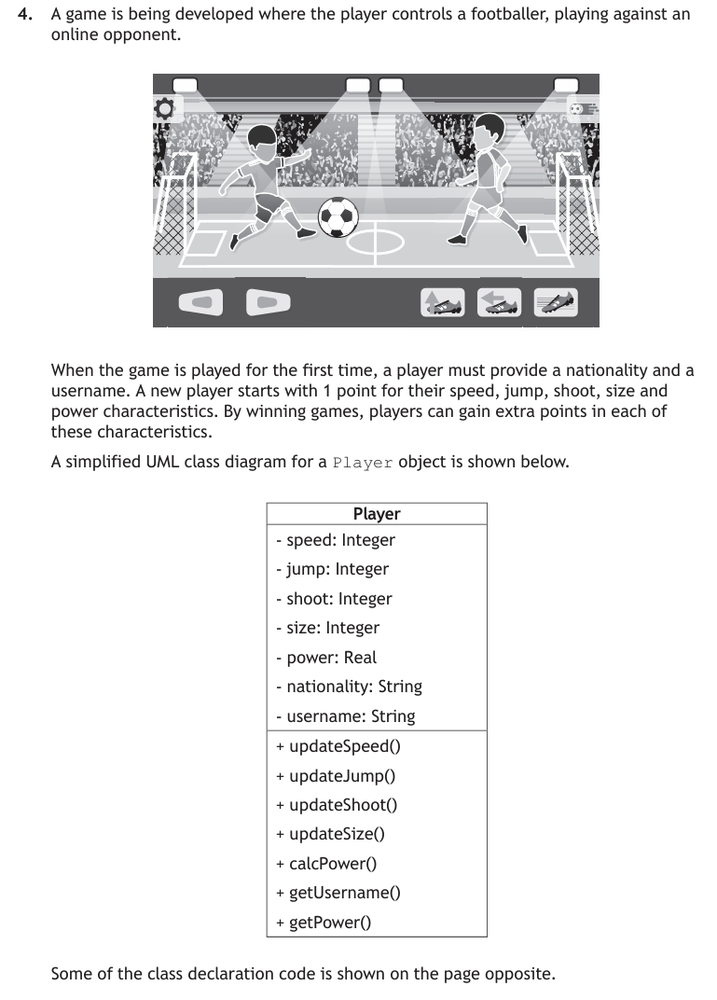
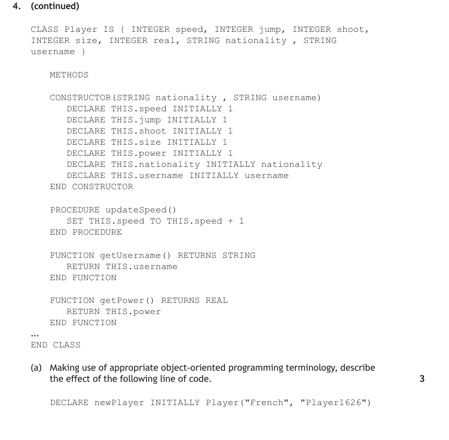
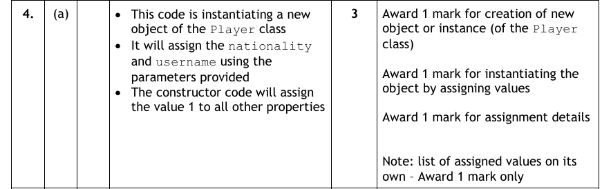
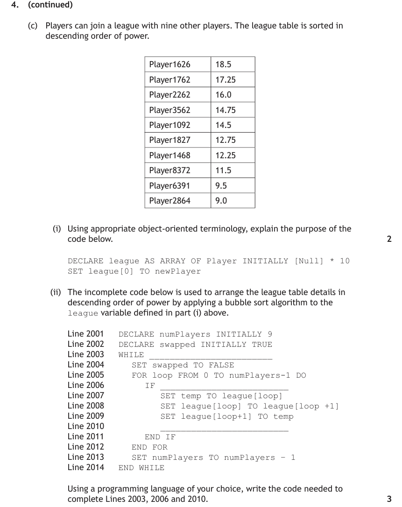
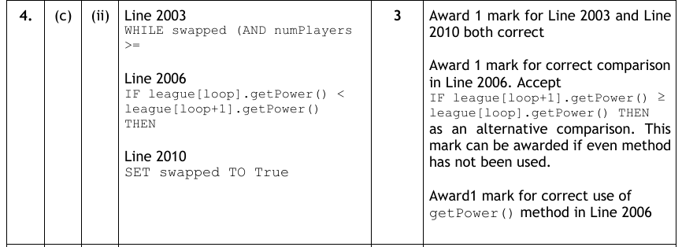
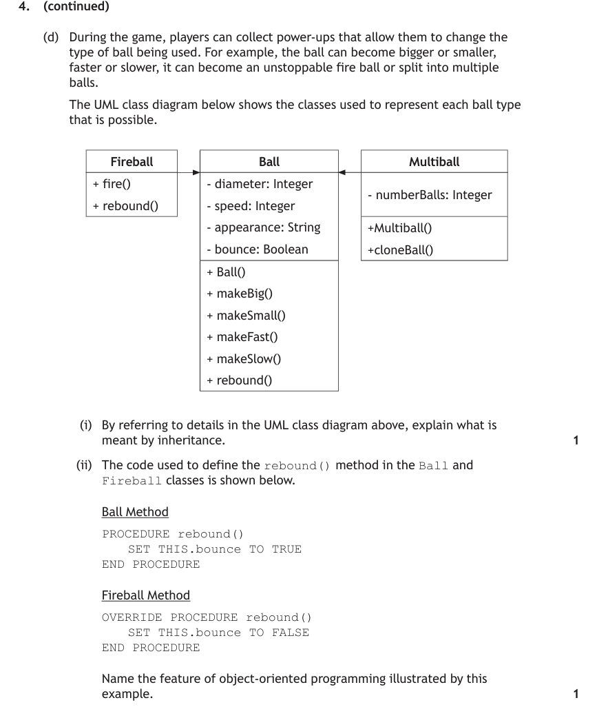
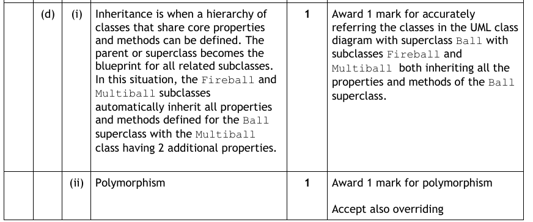

Why Object-Oriented Programming?
As programs grow, it becomes important to limit how much one part of a program can interfere with the data in another. Object orientation separates a program into blocks of related data and the operations that apply to that data. Linking the data and its operations together means they can be treated as a single entity — an object — and the data can only be accessed directly by its associated operations.
You must be able to describe, exemplify and implement every construct on this page: object, property, method, class, sub-class, encapsulation, inheritance, instantiation and polymorphism. Precise use of this terminology is exactly what 'describe' questions reward.
Key Terms
Classes & Objects
A class is a blueprint. Once defined, any number of objects can be created from it. The class definition describes the data each object needs — its instance variables (properties) — and what each object can do — its methods.
A music player needs to store tracks. Each track has a title, an artist and a length — three instance variables — and can display itself — one method, showTrack().
CLASS Track IS {STRING title, STRING artist, REAL length}
METHODS
PROCEDURE showTrack()
SEND THIS.title & " " & THIS.artist & " " & THIS.length TO DISPLAY
END PROCEDURE
END CLASSclass Track:
def __init__(self, title, artist, length):
self.title = title
self.artist = artist
self.length = length
def show_track(self):
print(self.title, self.artist, self.length)Two pieces of vocabulary to notice. In reference language, the keyword THIS is used inside a method to access the current object's instance variables; Python's equivalent is self. A method is called through an object using dot notation:
DECLARE favouriteTrack INITIALLY Track("Telstar", "Tornados", 3.4)
favouriteTrack.showTrack() # displays: Telstar Tornados 3.4favourite_track = Track("Telstar", "Tornados", 3.4)
favourite_track.show_track() # displays: Telstar Tornados 3.4Constructors & Instantiation
Creating an object from a class is called instantiation, and the method that runs when it happens is the constructor. The constructor has the same name as the class (in Python it is always __init__) and gives initial values to some or all of the instance variables — saving you from initialising them by hand every time an object is created.
CLASS PlayList IS {ARRAY OF Track tracks, INTEGER next,
INTEGER maxLength, REAL playTime}
METHODS
CONSTRUCTOR PlayList(INTEGER maxLength)
DECLARE THIS.maxLength INITIALLY maxLength
DECLARE THIS.tracks INITIALLY Track[maxLength]
DECLARE THIS.next INITIALLY 0
DECLARE THIS.playTime INITIALLY 0.0
END CONSTRUCTOR
PROCEDURE addTrack(Track newTrack)
IF THIS.next = THIS.maxLength THEN
SEND "Error - playlist full" TO DISPLAY
ELSE
SET THIS.tracks[THIS.next] TO newTrack
SET THIS.next TO THIS.next + 1
SET THIS.playTime TO THIS.playTime + newTrack.length
END IF
END PROCEDURE
END CLASSclass PlayList:
def __init__(self, max_length):
self.max_length = max_length
self.tracks = []
self.play_time = 0.0
def add_track(self, new_track):
if len(self.tracks) == self.max_length:
print("Error - playlist full")
else:
self.tracks.append(new_track)
self.play_time = self.play_time + new_track.length# Reference language
DECLARE myTracks INITIALLY PlayList(10)
myTracks.addTrack(Track("Hey Joe", "Jimi Hendrix", 5.47))
# Python
my_tracks = PlayList(10)
my_tracks.add_track(Track("Hey Joe", "Jimi Hendrix", 5.47))PlayList(10) instantiates a PlayList object by calling its constructor with an actual parameter of 10. Being able to narrate one line of code with that precision is what "explain this code" questions are looking for.The Principles — Encapsulation, Inheritance & Polymorphism
Encapsulation — bundling and protecting data
Encapsulation is the bundling of methods and instance variables into one unit — the class — which then lets each member be declared private or public:
- Private (−) — accessible only from inside the owning class;
- Public (+) — accessible from any other part of the program.
Good practice is to make instance variables private and to reach them only through public setters (methods that change a value) and getters (methods that retrieve one). This stops other parts of the program updating variables unintentionally — the whole reason OOP exists.
PROCEDURE setAddress(STRING newAddress)
SET THIS.address TO newAddress
END PROCEDURE
FUNCTION getAddress() RETURNS STRING
RETURN THIS.address
END FUNCTIONdef set_address(self, new_address):
self.__address = new_address # double underscore marks it private
def get_address(self):
return self.__addressInheritance — sub-classes and super-classes
Inheritance lets a sub-class inherit all the properties and methods of a super-class, then add its own. Common data is written once, in the super-class; the specialised classes only add what makes them different.
CLASS ForSale INHERITS House WITH {REAL askingPrice, BOOLEAN sold}
METHODS
PROCEDURE updateAskingPrice(REAL newPrice)
SET THIS.askingPrice TO newPrice
END PROCEDURE
END CLASSclass ForSale(House):
def __init__(self, address, town, asking_price):
super().__init__(address, town) # super-class constructor
self.asking_price = asking_price
self.sold = False
def update_asking_price(self, new_price):
self.asking_price = new_priceA ForSale object now has every House property plus its own two — without House's code being repeated. On a class diagram this is shown by an arrow from the sub-class to the super-class (see Design).
Polymorphism — one name, many behaviours
Polymorphism ("many forms") means the same method name can behave differently depending on the class of the object it is called on. A sub-class overrides an inherited method by providing its own version:
CLASS House ...
PROCEDURE showDetails()
SEND THIS.address & " " & THIS.town TO DISPLAY
END PROCEDURE
END CLASS
CLASS ForSale INHERITS House ...
OVERRIDE PROCEDURE showDetails()
SEND THIS.address & " offers over " & THIS.askingPrice TO DISPLAY
END PROCEDURE
END CLASSclass House:
def show_details(self):
print(self.address, self.town)
class ForSale(House):
def show_details(self): # overrides the inherited method
print(self.address, "offers over", self.asking_price)Calling property.showDetails() now runs whichever version matches the object's class — a House object shows address and town, a ForSale object shows the asking price. The calling code doesn't need to know or care which it has: that is polymorphism.
Arrays of Objects
An array of objects is exactly what it sounds like: an array whose elements are objects created from a class. It is the OO equivalent of Higher's array of records — and it is why the PlayList class above declared tracks as ARRAY OF Track.
# display every track in the playlist
PROCEDURE showTracks()
FOR counter FROM 0 TO THIS.next - 1 DO
THIS.tracks[counter].showTrack()
END FOR
END PROCEDURE
# linear search of an array of objects by title
FUNCTION findTitle(STRING trackTitle) RETURNS INTEGER
DECLARE result INITIALLY -1
FOR index FROM 0 TO THIS.next - 1 DO
IF THIS.tracks[index].title = trackTitle THEN
SET result TO index
END IF
END FOR
RETURN result
END FUNCTIONdef show_tracks(self):
for track in self.tracks:
track.show_track()
def find_title(self, track_title):
result = -1
for index in range(len(self.tracks)):
if self.tracks[index].title == track_title:
result = index
return resultThe access pattern mirrors an array of records — index selects the object, dot notation selects the property or method: tracks[index].title. Every standard algorithm can be applied to an array of objects by comparing one property of each object.
Worked Examples — 2023 Question 4
This past-paper question walks through a complete OO program — reading a class diagram, explaining constructs, then writing OO code. It is the best single rehearsal of this whole page. Attempt each part before expanding.

Before reading the parts: study the class definitions. Identify the class names, instance variables (with data types), the constructor, and any inheritance between classes — the answers to nearly every part are in that structure.









Test Yourself
Attempt each question first, then expand the marking instructions to check your answer.
The following line appears in a program:
DECLARE nextBooking INITIALLY Booking("B107", "2026-03-14", 4)Using the correct object-oriented terminology, explain what this line does. Your answer should use the terms class, object, constructor and instantiation. (3 marks)
Marking Instructions
Award 1 mark per bullet, to a maximum of 3:
- An object called
nextBookingis created (instantiated) from theBookingclass; - the constructor of the Booking class is called;
- the three actual parameters ("B107", "2026-03-14", 4) give initial values to the object's instance variables.
A programmer makes all the instance variables of a BankAccount class private, and provides public methods deposit(), withdraw() and getBalance().
Explain one benefit of this approach, and state the term that describes it. (2 marks)
Marking Instructions
- The balance cannot be changed directly by other parts of the program — it can only be updated through the class's own methods, preventing accidental or invalid changes. (1 mark)
- This is encapsulation. (1 mark)
A program stores Circle, Square and Triangle objects (all sub-classes of Shape) in one array. The loop below displays the area of every shape:
FOR index FROM 0 TO length(shapes) - 1 DO
SEND shapes[index].area() TO DISPLAY
END FORExplain how polymorphism makes this loop possible. (2 marks)
Marking Instructions
- Each sub-class overrides
area()with its own calculation (πr² for Circle, l² for Square, ½bh for Triangle). (1 mark) - When
area()is called, the version that runs is determined by the class of the object in that element — so one method name works for every shape without the loop needing to check the type. (1 mark)